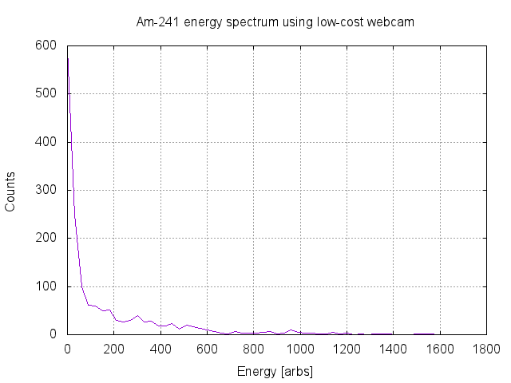
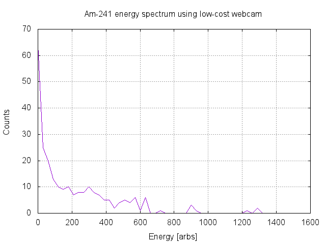

Measurement: Low-cost webcam as radiation detector Date: 2016-06-29 Equipment: - Low-cost usb endoscope - Am-241 source from smoke detector - Aluminum foil Environment: - Temperature 25.7C Setup: - Am-241 sample placed in contact with endoscope front window - Endoscope and sample are wrapped in aluminum foil - Blinks induced by gamma photons are recorded with a python script Results: Am-241, run 1, integration time ~1,5h  Am-241, run 2, integration time ~1h, more stringent filtering  Conclusions: - Works only as a counter - Spectrometry requires a real instrument